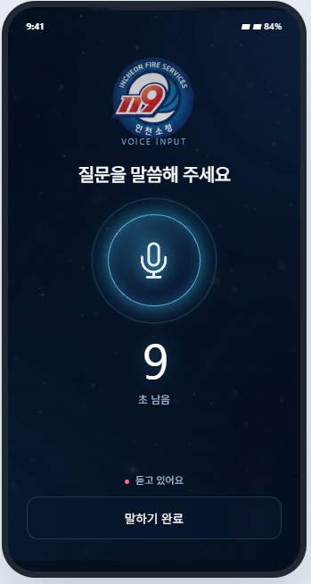
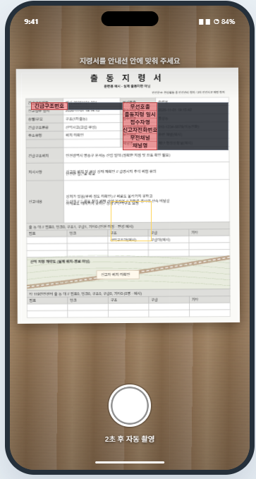
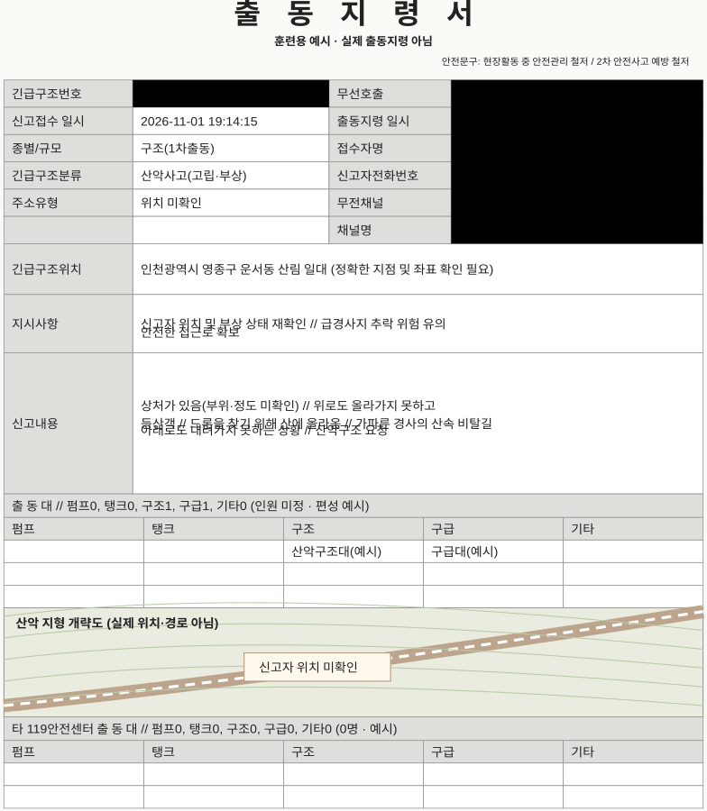
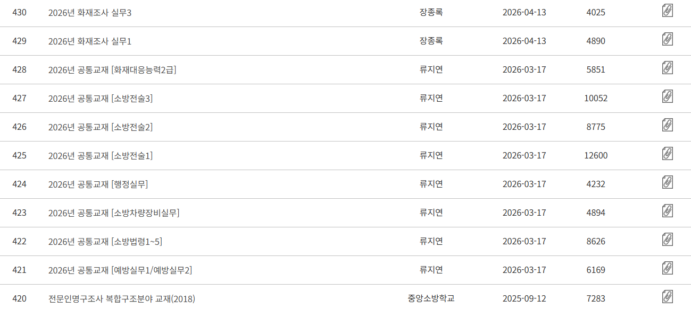
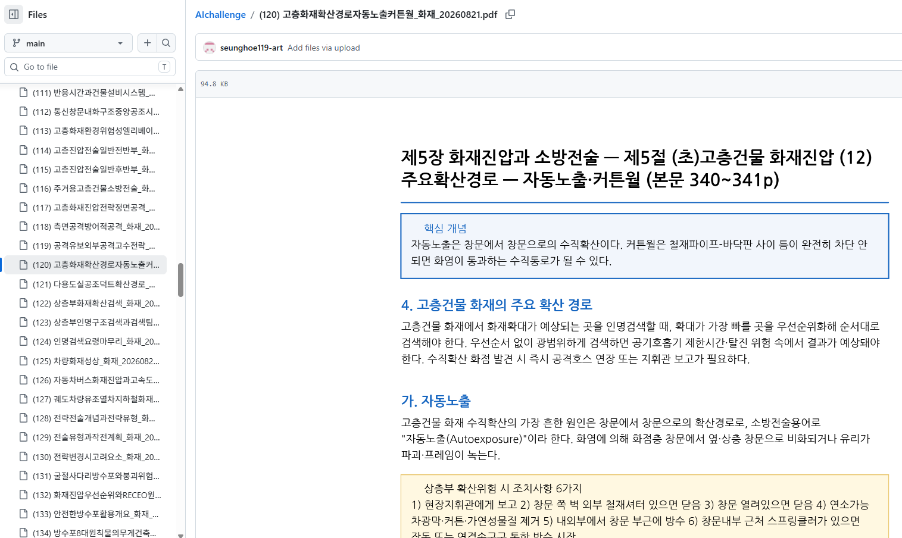
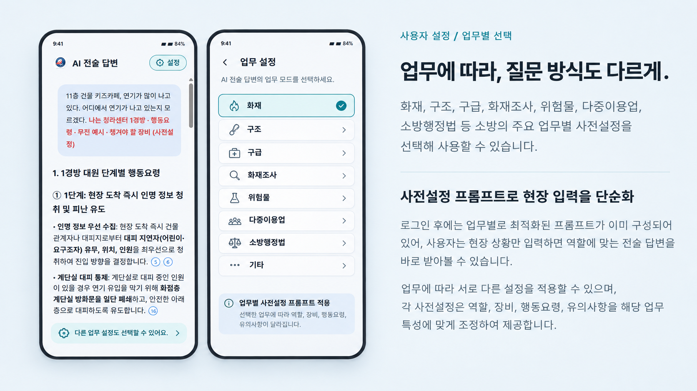

켜고. 열고. 찾고. 실행하고.
화면 켜기터치터치→메뉴 열기터치터치→앱 서랍에서 찾기터치터치→실행터치터치
기기와 설정에 따라 여러 번의 조작이 필요합니다.
- 음성 인식 안 됨
- 사진 전송 안 됨
- 구글 로그인 필요
- 지령서 개인정보 차단 기능 없음
앱 실행부터 질문·답변 확인까지 3번 이내 조작을 목표로 설계합니다.
조작이 복잡하면
사람들은 사용하지 않습니다.
말하면, 다음 단계로.

교재의 장·절·페이지까지.
현재는 발표용 목업입니다. 아래 기술은 구현 목표와 설계 방향입니다.
젊은 대원부터 스마트폰 조작이 익숙하지 않은 지휘관까지,
누구나 쓸 수 있도록 설계합니다.
기기와 설정에 따라 여러 번의 조작이 필요합니다.
지원 기기에 미리 설정한 물리 버튼 동작으로 앱을 열고, 음성 입력을 자동으로 시작하는 구상입니다.
기본 질문 흐름의 조작 목표
질문 · 남은 시간 · 답변
녹음 종료와 확인 후 전송
물리 버튼 동작은 기기·설정에 따라 다릅니다. 문장 수정이나 출처 열기 등 추가 조작은 별도입니다.
앱을 열고, 계정에 로그인하고, 노트북을 선택하는 과정.
익숙한 사람에게는 쉽지만, 누군가에게는 사용을 못하게 하는 단계입니다.
누구나 사용하기 쉬운 UI/UX
단순하게 만드는 목표입니다.
지령서를 촬영할 때 지정된 정보 영역을 안내하고,
전송 전에는 해당 값이 검정 처리된 사진을 확인합니다.


개인정보가 지령에 있는 경우, 보내기 전에 마스킹 처리합니다.
서버 내부의 로컬 LLM이 개인정보 노출 가능성을 누적 3회 감지하면, 이후 10회 사용 동안 확인 팝업을 표시하도록 설계합니다.
반복 확인으로 경각심을 높이고,
개인정보를 먼저 가리는 습관을 유도합니다.
몇 번 틀리면
사람들은 사용하지 않습니다.
교재명 · 장과 절 · 페이지 · 근거 문장
직접 찾아보고 판단할 수 있습니다.
조언에는 확인 가능한 출처를 연결하는 것을 원칙으로 합니다. 관련 자료를 찾지 못하면 근거가 부족하다고 알리고, 출처를 만들어 내지 않습니다. 자료가 있다는 사실과 현장에 적합한 판단인지는 구분하여 검토합니다.
검색증강생성(RAG)은 관련 문서를 먼저 찾고,
찾은 자료를 바탕으로 답변을 구성하는 방식입니다.
음성·사진·텍스트를
질문으로 정리
관련 내용을 찾아
원문 위치와 함께 전달
답변과 인용 내용이
일치하는지 검증
조언 옆에서
교재의 근거 확인
중앙소방학교 자료실에서 공개된 소방전술 교재와 강의자료를 확인할 수 있습니다.

약 600페이지의 교재를 전체 읽고, 문맥과 단원 기준으로 내용을 나눴습니다.
한 PDF를 최대 3페이지로 구성해 필요한 근거를 찾고 원문 위치와 연결하기 쉽게 준비했습니다.
교재 전체를 읽으며 내용과 단원 구성을 확인했습니다.
→설명과 문단의 흐름을 살펴, 함께 읽어야 할 내용을 구분했습니다.
→구분한 내용을 섹션별로 재구성하고 PDF당 최대 3페이지로 나눴습니다.
→필요한 내용을 찾고 관련 자료의 위치를 확인하기 좋은 단위로 준비했습니다.

TECHNOLOGY · 웹뷰 기반 하이브리드 앱
휴대폰 앱 안에서 중앙에 배포된 웹앱을 불러오는 구조입니다. 화면 구성과 사용 흐름은 웹앱에서 제공하고, 전술 자료 검색과 AI 답변은 중앙 서버에서 처리합니다.
본부에서 웹 화면이나 개정 교재를 갱신하면, 개인폰과 업무폰은 다시 접속할 때 변경된 화면과 최신 자료를 이용합니다. 웹 UI와 교재를 수정할 때마다 대원들이 앱을 개별 업데이트하는 부담을 줄입니다.
웹뷰(WebView)로 중앙 웹앱을 띄우고, 마이크·카메라 등 기기 기능을 연결합니다.
화면 구성, 버튼, 입력 방식과 사용 흐름을 제공합니다. 웹 화면의 변경사항은 다시 불러올 때 반영합니다.
전술 교재를 관리하고 관련 내용을 검색한 뒤, AI 답변과 교재명·장·절·페이지 출처를 제공합니다.
처음 한 번 로그인·소속·업무 유형을 설정하고, 이후 질문할 때 중앙의 최신 자료를 조회합니다. 앱 자체의 기기 연동 기능을 변경할 때는 앱 업데이트가 필요할 수 있습니다.
같은 상황도 담당 업무에 따라 필요한 정보가 달라집니다. 로그인 후 업무와 역할을 설정해, 매번 긴 질문을 작성하는 부담을 줄이는 방식입니다.

화재·구조·구급 등 현장 업무부터 예방·법령 확인 등 내근 업무까지, 필요한 업무 설정을 선택합니다.
출동대원 또는 예방업무 담당자 등 사용자의 역할과 장비·행동요령·확인 기준을 질문에 함께 전달하도록 구성합니다.
사용자는 현장 상황이나 궁금한 내용을 입력합니다. 답변을 받은 뒤에는 연결된 출처와 원문을 확인하며 검토합니다.
기능 테스트에서 6개 분야의 예시 질문을 복사해 NotebookLM에 입력해 보세요.
빨간색 사전 설정 문구가 질문에 어떤 맥락을 더하는지, 답변과 출처를 함께 살펴볼 수 있습니다.